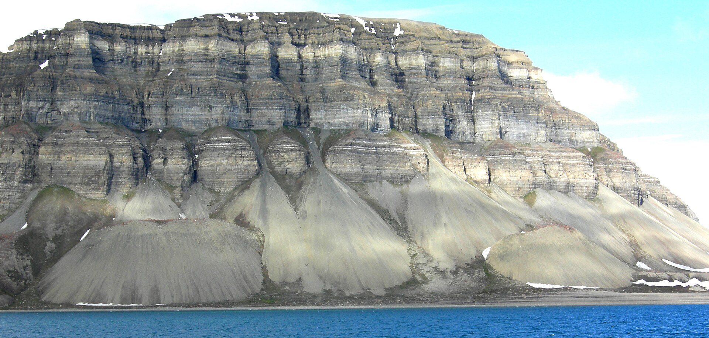
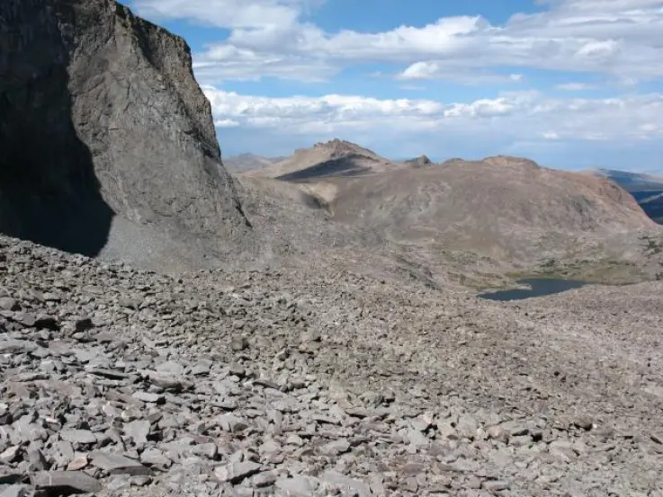
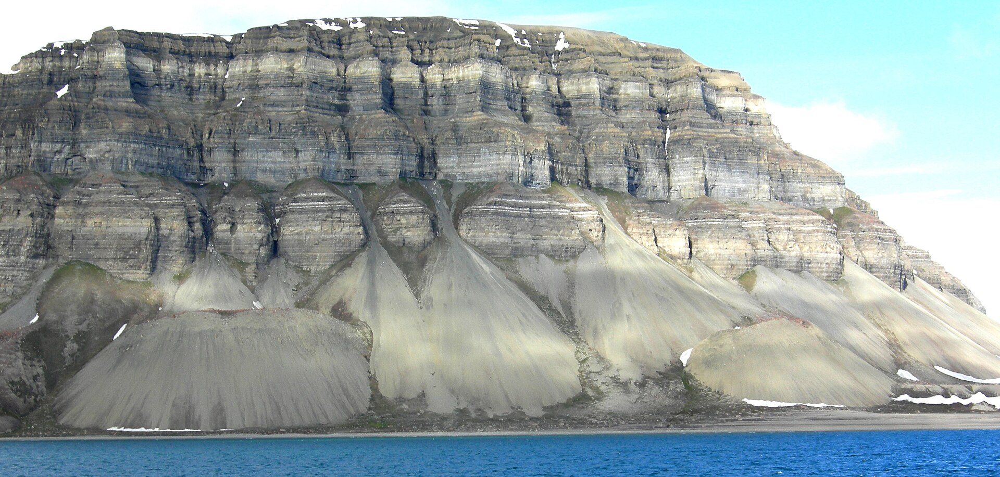
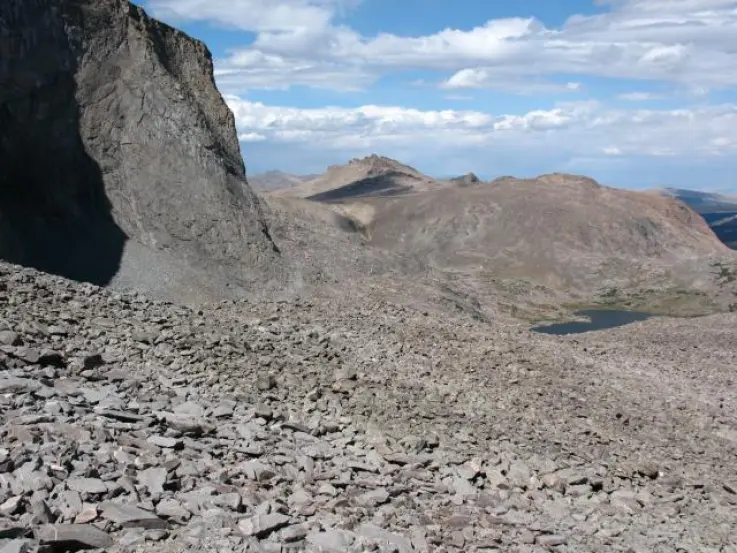

Que es una tartera?
Una tartera, rosseguera o xaragall és una extensió de terreny, situada normalment al flanc d'una muntanya, coberta de pedres despreses dels cims. Si la formació té un pendent pronunciat i està composta per pedres mòbils, s'anomena talús. Són d'origen crioclàstic, sovint en un ambient periglacial actual o pretèrit.
Normalment, una tartera, com a acumulació de blocs i còdols cantelluts al vessant d'una muntanya, és una zona àrida i seca, colonitzada per poques espècies vegetals. Un erm d'alta muntanya és un terreny amb prats, tarteres i afloraments rocosos per damunt dels 2.000 metres. Les tarteres inestables situades en vessants de fort pendent poden constituir una rosseguera, terme que es refereix més aviat al talús inclinat format per les pedres despreses.
 



Perque escalar/baixar una tartera val la pena
-No hi ha res millor que pujar o baixar una muntanya per un lloc on no creix cap arbre i així pots gaudir plenament del sol d'alta muntanya.
-Pots practicar l'esport més divertit d'alta muntanya també conegut com a tartering o tarterasurf.
-Es molt divertit que cada vegada que intentis fer una passa i que les pedres et facin relliscar constantment.
Tipus de tartera:
Tartera Pedrusca
És un tipus de tartera composta de pedres de grandària considerable i que no es mouen quan i navegues
Tartera tradicional
És la tartera més habitual composta per pedres de grandària mitja/petit on les pedres es desprenen al caminar el que les fa les més ideals per tartering.
Tartera marina
És un tipus de tartera situada al costat del mar i està composta de pedres molt petites que normalment són d'un color groguenc.
Tartera domus
Es un tipus de tartera composta per particules microscopiques que es formen en superficies inclinades de les cases quan el habitan no la neteija durant un perioda prolongat de temps
Tartera subZero
És un tipus de tartera habitual en muntanyes d'alta elevació i sobretot durant l'hivern. Aquest tipus de tartera està composta de cristalls d'H₂O i es poden formar sobre tarteres tradicionals.
Tartering
Que es?
Tartering consisteix a baixar a tota velocitat una tartera deixant-te portar per les pedres que van caient amb el teu pes. També tens la variació on pots utilitzar un amic com a placa de surf (Recomanat sol per tartarerus extrems sobretot si ets el que fa de placa)
La competició consisteix a baixar una tartera de 200 m de desnivell amb una inclinació mitjana de 36º
Campió mundial de la categoria individual
Oriol R. també conegut com El Potes Llargues és un dels pioners del tartering amb la seva nova tècnica de baixar tarteres fent la roda el qual li permet guanyar una gran velocitat. El seu record és de baixar una tartera de 212 m de desnivell en sol 25 segons.
Campións mundials de la categoria grupal(Tarterasurf)
El duo dinàmic dels germans Oriol R. i Juli R. són els fundadors de l'equip més reconegut en mundillo "Els DeoTartus" o simplement DT. La seva tècnica està basada en el fet que un dels 2 (Juli) vist que és més gros i pesa més fa de placa el qual li permet crear una esllavissada més gran i l'altre (Oriol) fa de conductor al ser més prim li és més fàcil maniobrar i mantenir l'equilibri. El record és de sol uns 20 s. El dia del record van rear una esllavissada tal que van dividir la tartera en 2 el qual cap altre grup ha aconseguit.
Diguens alguna cosa